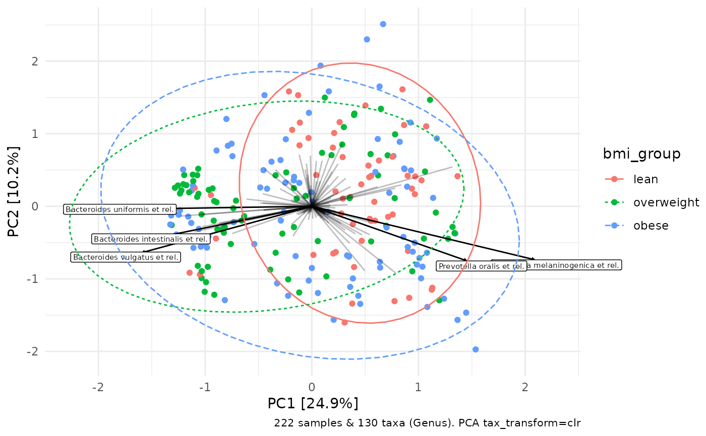
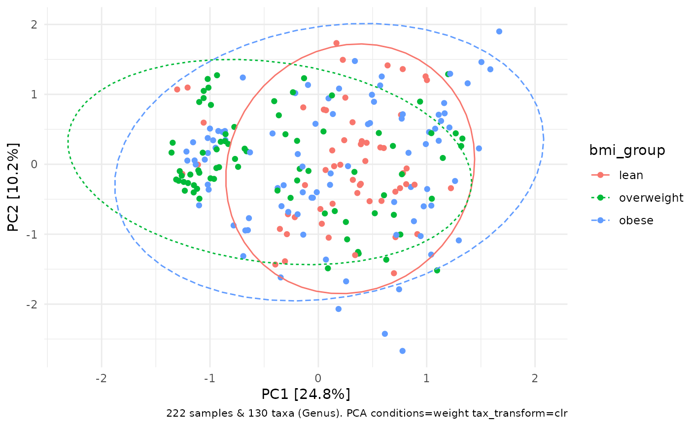
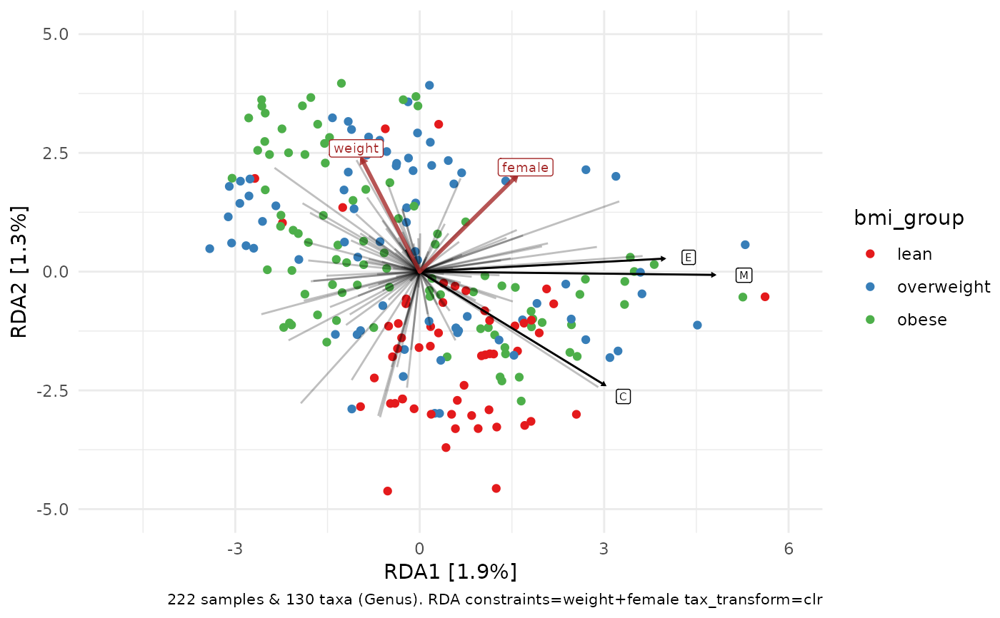

Ordination visualisation. Utilises results of ord_calc.
For interpretation see the the relevant pages on PCA, PCoA, RDA, or CCA on the "gusta me" website: https://sites.google.com/site/mb3gustame/
Some other inspiration was from here: https://ourcodingclub.github.io/2018/05/04/ordination.html
ord_plot( data, axes = 1:2, scaling = "species", constraint_vec_length = NA, constraint_vec_style = list(), constraint_lab_length = constraint_vec_length * 1.1, constraint_lab_style = list(), var_renamer = function(x) identity(x), plot_taxa = FALSE, tax_vec_length = NA, tax_vec_style_all = list(), tax_vec_style_sel = list(), tax_lab_length = tax_vec_length * 1.1, tax_lab_style = list(), taxon_renamer = function(x) identity(x), plot_samples = TRUE, auto_caption = 8, center = FALSE, clip = "off", expand = !center, ... )
Arguments
| data | list object output from ord_calc |
|---|---|
| axes | which axes to plot: numerical vector of length 2 |
| scaling | either "species" (2) or "site" (1) scores are scaled by eigenvalues, and the other set of scores is left unscaled (from ?vegan::scores.cca) |
| constraint_vec_length | NA = auto-scaling for line segment drawn for any constraints. Alternatively provide a numeric length multiplier yourself. |
| constraint_vec_style | list of aesthetics/arguments (colour, alpha etc) for the constraint vectors |
| constraint_lab_length | relative length of label drawn for any constraints (relative to default position which is defined by correlation with each drawn axis) |
| constraint_lab_style | list of aesthetics/arguments (colour, size etc) for the constraint labels |
| var_renamer | function to rename constraining variables for plotting their labels |
| plot_taxa | if ord_calc method was "PCA/RDA" draw the taxa loading vectors (see details) |
| tax_vec_length | NA = auto-scaling for line segment drawn for any taxa. Alternatively provide a numeric length multiplier yourself. |
| tax_vec_style_all | list of named aesthetic attributes for all (background) taxon vectors |
| tax_vec_style_sel | list of named aesthetic attributes for taxon vectors for the taxa selected by plot_taxa |
| tax_lab_length | multiplier for label distance/position for any selected taxa |
| tax_lab_style | list of fixed aesthetics (colour, size etc) for the taxon labels |
| taxon_renamer | function that takes any plotted taxon names and returns modified names for labels |
| plot_samples | if TRUE, plot sample points with geom_point |
| auto_caption | size of caption with info about the ordination, NA for none |
| center | expand plot limits to center around origin point (0,0) |
| clip | clipping of labels that extend outside plot limits? |
| expand | expand plot limits a little bit further than data range? |
| ... | pass aesthetics arguments for sample points, drawn with geom_point using aes_string |
Value
ggplot
Details
How to specify the plot_taxa argument:
FALSE --> plot no taxa vectors or labels
integer vector e.g. 1:3 --> plot labels for top 3 taxa (by longest line length)
single numeric value e.g. 0.75 --> plot labels for taxa with line length > 0.75
character vector e.g. c('g__Bacteroides', 'g__Veillonella') --> plot labels for the exactly named taxa
Examples
library(ggplot2) data("dietswap", package = "microbiome") # create a couple of numerical variables to use as constraints or conditions dietswap <- dietswap %>% ps_mutate( weight = dplyr::recode(bmi_group, obese = 3, overweight = 2, lean = 1), female = dplyr::if_else(sex == "female", true = 1, false = 0) ) # compute and plot ordinations for demonstration of conditioning unconstrained_aitchison_pca <- dietswap %>% tax_transform("clr", rank = "Genus") %>% ord_calc() # method = "auto" --> picks PCA as no constraints or distances unconstrained_aitchison_pca %>% ord_plot(colour = "bmi_group", plot_taxa = 1:5) + stat_ellipse(aes(linetype = bmi_group, colour = bmi_group))# remove effect of weight with conditions arg # scaling weight with scale_cc is not necessary as only 1 condition is used dietswap %>% tax_transform("clr", rank = "Genus") %>% ord_calc(conditions = "weight", scale_cc = FALSE) %>% ord_plot(colour = "bmi_group") + stat_ellipse(aes(linetype = bmi_group, colour = bmi_group))#>#># alternatively, constrain variation on weight and female constrained_aitchison_rda <- dietswap %>% tax_transform("clr", rank = "Genus") %>% ord_calc(constraints = c("weight", "female")) # constraints --> RDA#>#> #>#>#>constrained_aitchison_rda %>% ord_plot(colour = "bmi_group", constraint_vec_length = 2) + stat_ellipse(aes(linetype = bmi_group, colour = bmi_group))# ggplot allows additional customisation of the resulting plot p <- constrained_aitchison_rda %>% ord_plot(colour = "bmi_group", plot_taxa = 1:3) + lims(x = c(-5, 6), y = c(-5, 5)) + scale_colour_brewer(palette = "Set1") p + stat_ellipse(aes(linetype = bmi_group, colour = bmi_group))# you can rename the taxa on the labels with any function that # takes and modifies a character vector constrained_aitchison_rda %>% ord_plot( colour = "bmi_group", plot_taxa = 1:3, taxon_renamer = function(x) stringr::str_extract(x, "^.") ) + lims(x = c(-5, 6), y = c(-5, 5)) + scale_colour_brewer(palette = "Set1")# it is possible to facet these plots # (although I'm not sure it makes sense to) # but only unconstrained ordination plots and with plot_taxa = FALSE unconstrained_aitchison_pca %>% ord_plot(color = "sex", auto_caption = NA) + facet_wrap("sex") + theme(line = element_blank()) + stat_density2d(aes(colour = sex)) + guides(colour = FALSE)unconstrained_aitchison_pca %>% ord_plot(color = "bmi_group", plot_samples = FALSE, auto_caption = NA) + facet_wrap("sex") + theme(line = element_blank(), axis.text = element_blank()) + stat_density2d_filled(show.legend = FALSE) + geom_point(size = 1, shape = 21, colour = "black", fill = "white")